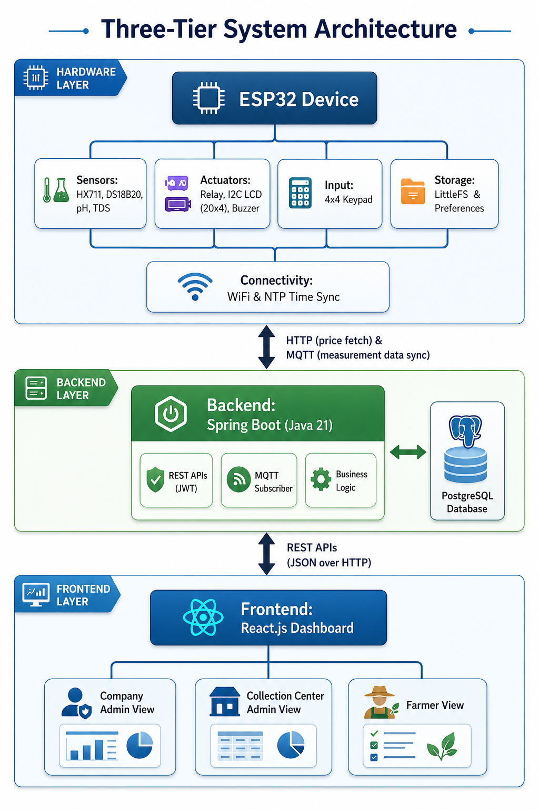
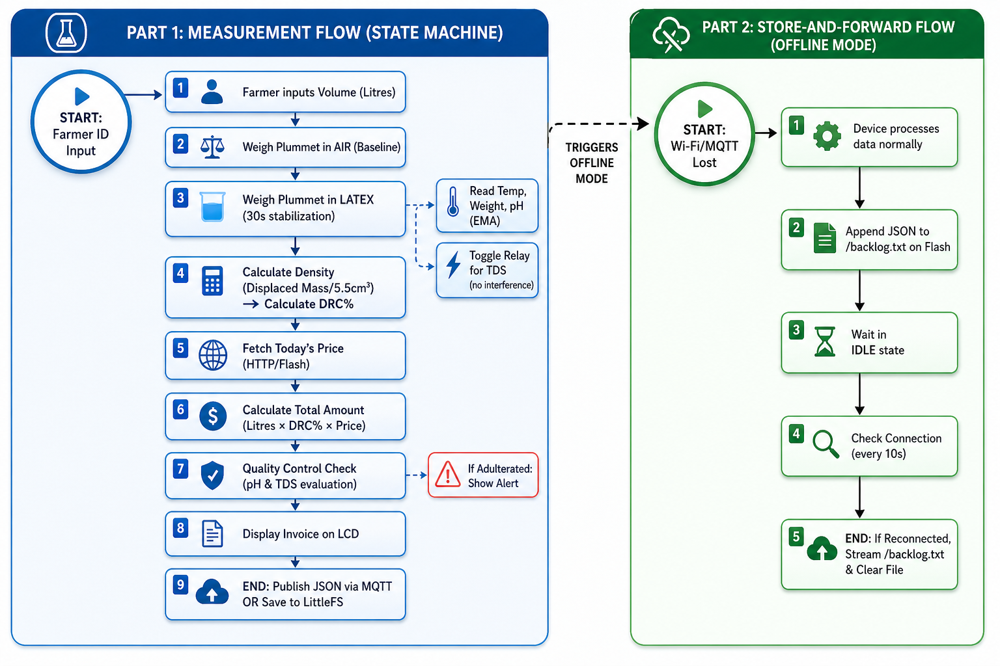

IoT-based rubber latex quality measurement system — automating DRC calculation, fraud detection, and transparent payments for Sri Lanka's natural rubber industry.
Sri Lanka's natural rubber industry has relied on a decades-old, manual measurement process — open to error, fraud, and opacity. We built the solution.
Every function of the Smart-Metrolac system — from edge sensing to cloud dashboards.
Hardware layer (ESP32) communicates via HTTP and MQTT to a Spring Boot backend, which feeds a React.js frontend through REST APIs.


A state-machine-driven firmware cycle ensures every reading is consistent, accurate, and non-blocking.
ESP32 dual-core 240MHz — simultaneously handling sensor reads, JSON serialization, and MQTT. Every component chosen for reliability in a harsh latex environment.
Every tool, protocol, and library powering Smart-Metrolac end-to-end.
Where we stand as of Milestone 2.
Department of Computer Engineering · University of Peradeniya